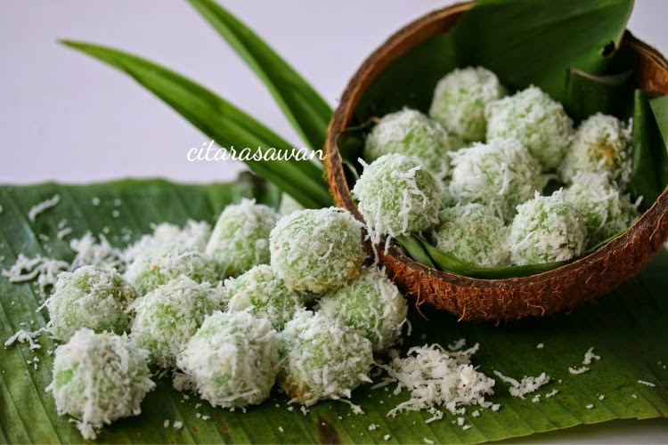

Buah Melaka

- 5 Pandan leaves
- 1 cup glutinous rice flour
- 2 tablespoons rice flour
- Palm sugar-diced into small cubes
- Desiccated coconut
- 1 teaspoon salt
- Put 3/4 of water into a pot and leave it to boil.
- Meanwhile, blend pandan leaves with some water (about 1/2 to 1 cup) and sieve it. Pour it slowly into the mixture of glutinous rice flour and rice flour until the dough can be shaped.
- Take about a thumb-sized of dough and flatten it on your hand*. Put the diced palm sugar at the centre and roll it into a ball.
- Make a few of those until the dough is used up. Then, add them into the boiling water and cook until the dough ball float. Set aside to dry.
- Mixed the desiccated coconut with salt.
- Roll the cooked dough balls in desiccated coconut until they are covered, carefully not to poke the balls or else the melted sugar will leak. Serve with your favourite drink.